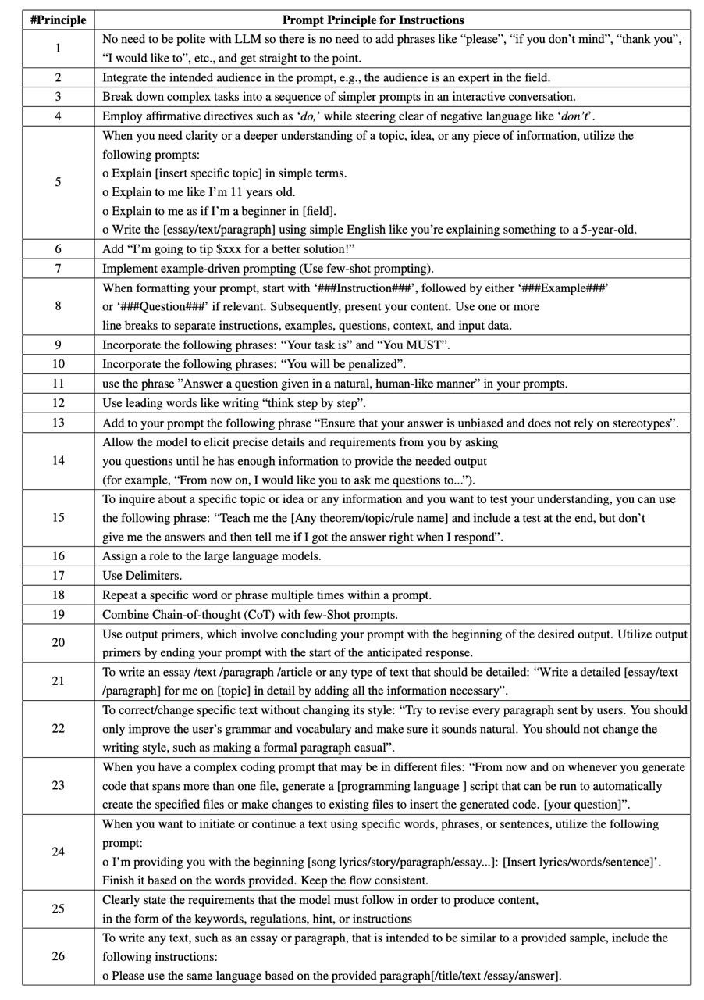
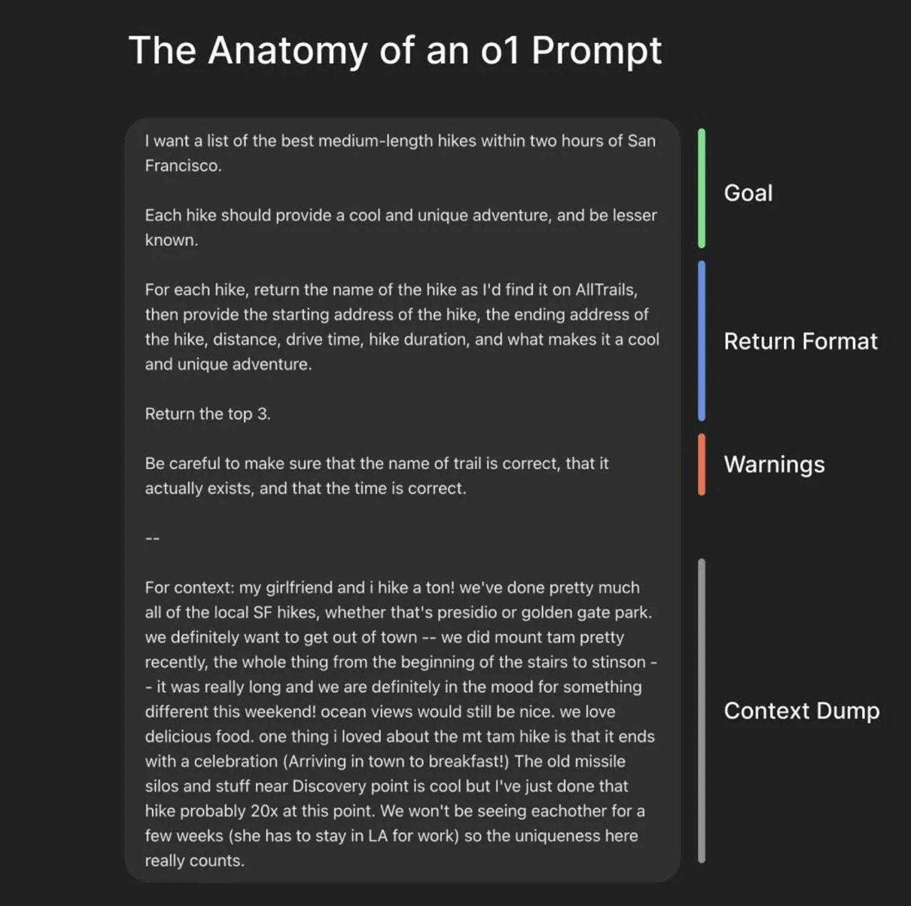

Prompt engineering notes
If you weren’t aware, there was a leak of Cursor and some other prompts. I’m not here to evaluate the quality of prompts, but let’s consider it as a state of the art from experienced guys.
First things first
It’s always valuable to check official docs, such as:
- https://platform.openai.com/docs/guides/prompt-engineering
- https://ai.google.dev/gemini-api/docs/prompting-intro
While the documentation is extensive, it is preferable to rely on it rather than controversial sources.
Controversial sources
 Real life examples
But for now let’s try to separate two goals:
- Build production-ready prompt which will be executed by some software
- Using AI in everyday life (for example all images here are AI-generated)
And focus on 2. In my personal workflow, I typically ask something like:
generate anime style image where AI fed up of prompt
No context, no examples, no additional instructions/restrictions. Will it work? Yes. Will it fit into overall stylistic? Probably not.
How to improve it? Following OpenAI best practices:
generate anime style image where AI fed up of prompt
Context:
- my blog is about …
- this blog post about …
- avoid smth
- do additional
If we are talking about text result, probably you’ll want to add:
provide result in markdown(?) format
example output: …
A few iterations of clarifications, and you’re great.
AI prompts in production software
Take a look at leaked prompts from the header and imagine how much time and energy was spent into it, having context from the OpenAI cookbook 🤯
Lifehack
Anthropic, claude.ai author, provides automated tool https://anthropic.com/metaprompt-notebook/ (which requires access to their model and API key) to generate better prompt. And I’m here to argue that it was born outdated.
Alternative: use any AI provider to generate a prompt for prompt by providing raw, unprepared context, for example:
build a prompt to
generate anime style image where AI fed up of prompt
ctrl-C+ctrl-Vof raw index.html
The resulted prompt:
Anime style image, depicting an AI as a young, humanoid character with glowing digital patterns on their skin. The AI’s expression is one of extreme exasperation and frustration. They are surrounded by a chaotic whirlwind of HTML code snippets, specifically similar to the provided HTML document. The AI is holding a crumpled piece of paper with the text “Prompt Engineering” scribbled on it. Their eyes are wide and strained, and a single tear is rolling down their cheek. The background should be a blurred, abstract representation of a computer screen with scrolling text. Use vibrant, saturated colors and dynamic lines to convey the AI’s overwhelmed and fed-up state. The style should be reminiscent of modern anime with a touch of cyberpunk aesthetic.
Execute the prompt and see resulted image on header.
Conclusion
AI has already evolved enough to replace third-party apps/services for prompt building, such as prompt engineers, a profession that emerged during the hype.